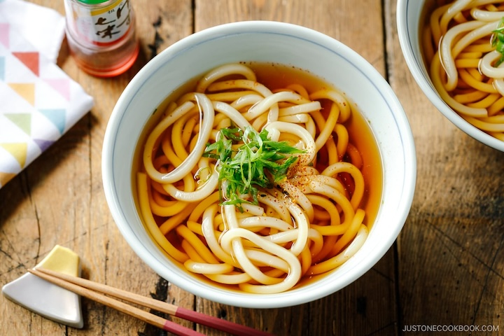

Intro to: Udon

Description:
Thick chewy noodles made out of wheat about 2-4 millimeters. It's similar to Ramen but the noodles are thicker.
It is served in many different rich warm broths.
There are many different types of udon, including: Kake Udon (my favorite), Zaru Udon, Yaki Udon, Curry Udon, Mizusawa Udon.
It is commonly used in Japanese cuisine, but sources say that it may have originated in China
Where to go:
My personal favorite place to buy udon is Marugame
which has three locations: in the SF Stonestown mall, Alameda, and Berkeley. I always order the BK udon with an egg and all of the toppings. For the people who enjoy meat, I recomend the Nikutama. They also have lots of different tempura to choose from. I get the tamago (fried egg).